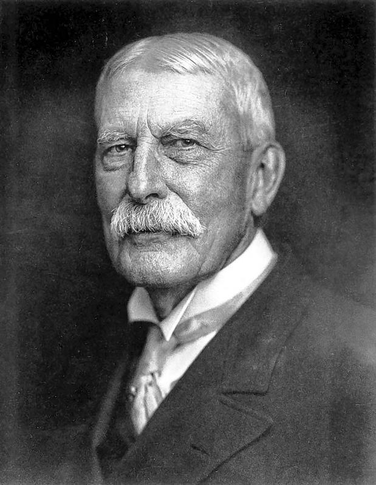
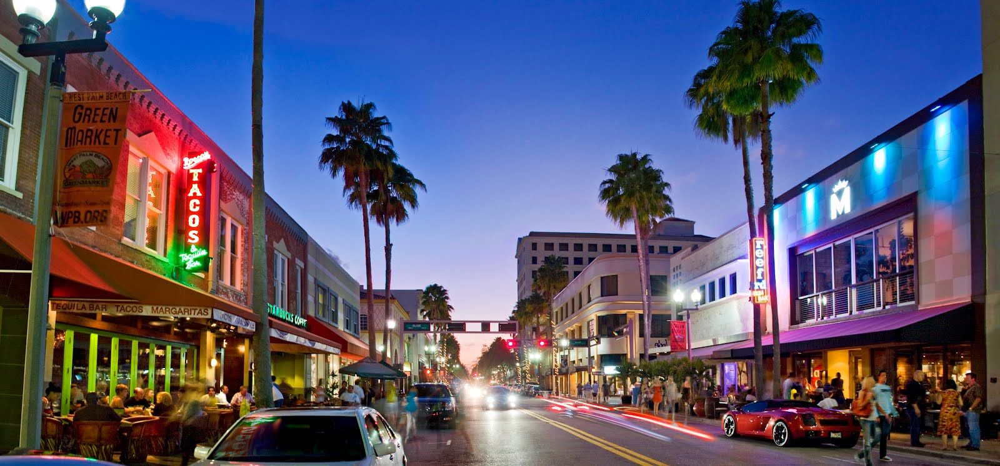

When Henry Morrison Flagler first came here in 1893, he called the Lake Worth region "a veritable paradise" and decided upon a dual plan for the area. He would turn Palm Beach into a resort and he would build a commercial city across the lake for his workers. That "worker city" would become beautiful West Palm Beach.
Flagler had his city laid out in November 1893, naming the streets for native plants. Running east and west were Althea, Banyan, Clematis, Datura, Evernia and Fern streets. North-South avenues were Lantana, Myrtle, Narcissus, Olive, Poinsettia (now Dixie Highway), Rosemary, Sapodilla and Tamarind. On Nov. 5, 1894, by a vote of 77 to 1, residents of the little town decided to incorporate the city of West Palm Beach. It soon became a bustling frontier town with storefronts along Clematis and Narcissus streets, and saloons lining Banyan Street. Banyan Street became as wild and well-known as any raucous town in the Wild West. It was so notorious that famed anti-alcohol crusader Carry Nation visited in 1904, wielding her Bible.
From 1920 to 1927, the city's population quadrupled, and everything grew including the schools, the farming and sugar businesses in the Glades, the hotels and theaters. A 1925 New York Times article noted that "Ten minutes to half an hour in any spot in the state would convince the most skeptical eyes and ears that something is taking place in Florida to which the history of developments, booms, inrushes, speculation, investments, yields no parallel." Unfortunately, tthe meteoric rise brought a terrible fall. Nervous speculators, in a bit of self-fulfilling prophecy, began to take the money and run. Then came the killer hurricanes of 1926 and 1928. From 1929 to 1930, the Depression dropped West Palm Beach's total property value by more than half. By 1935 property value was down to a little more than its pre-boom 1920 value. West Palm Beach would come back, but it took a world war to do it.
Strengthened by military dollars during World War II and an influx of veterans moving south after 1945, West Palm Beach exploded into a new era of progress. The city's total property value rose from a rock-bottom $18 million in 1935 to $72 million in 1949 and continued to surge year by year until it was $147.5 million by 1962 - an 800% increase in less than 30 years. The West Palm Beach metropolitan area was the fourth fastest growing area in the United States between 1950 and 1960. Development spread west past Military Trail and south to Lake Clarke Shores. Ads in the Palm Beach Post touted "new prestige neighborhoods" of concrete block homes in "suburban community villages." What could be finer than a three-bedroom, swimming pool home with central air - for just $14,950? The first TV station WIRK (Channel 21) came to town in 1953, and channels 5 and 12 followed a few years later.
On October 29, 1966, the main terminal at Palm Beach International Airport in West Palm Beach was dedicated (today over six million passengers a year pass through PBIA). Between 1990 and 2000, the population of West Palm Beach grew 22.8%. There are now over 100,000 permanent residents making West Palm Beach the largest community in Palm Beach County as well as the seat of its county government, judicial complex and boasting a newly renovated, vibrant downtown business district. West Palm Beach continues to grow into the 21st Century.
